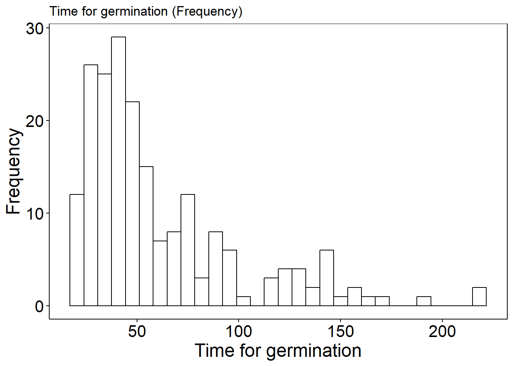
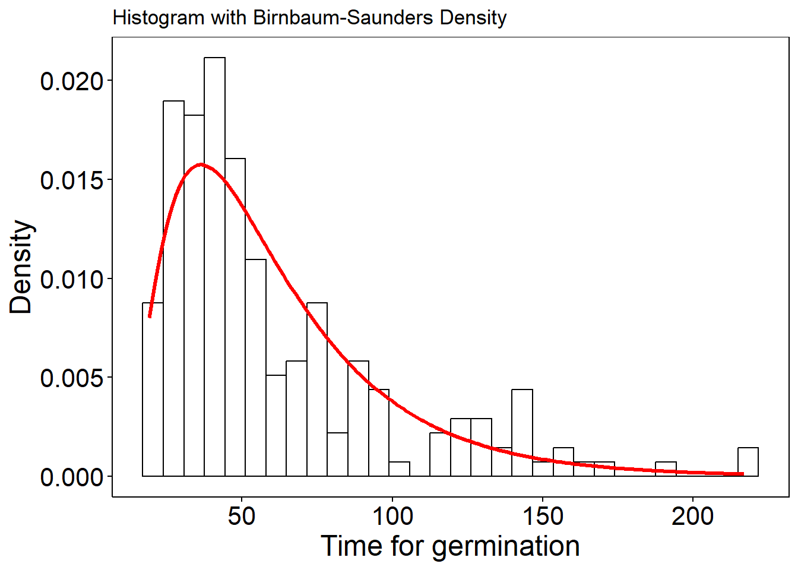
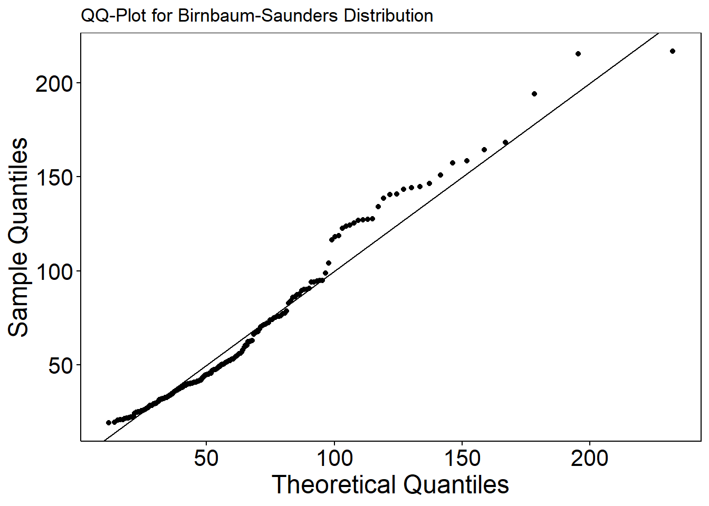

| id | puncture | temperature | weight | weight_after_hydration | time_under_hydration | phase | radicle | time |
|---|---|---|---|---|---|---|---|---|
| 475 | Yes | 34 | 0.425 | 1.342 | 42 | Germinated | 10.6 | 19.10 |
| 437 | Yes | 34 | 0.483 | 1.484 | 41 | Germinated | 9.9 | 19.54 |
| 390 | Yes | 31 | 0.481 | 1.319 | 41 | Germinated | 8.7 | 20.43 |
| 465 | Yes | 34 | 0.466 | 1.434 | 42 | Germinated | 9.2 | 20.93 |
| 317 | Yes | 28 | 0.384 | 1.536 | 41 | Germinated | 6.9 | 20.93 |
| 401 | No | 31 | 0.529 | 1.606 | 41 | Germinated | 8.2 | 21.37 |
Projeto - Rascunho
Modelagem com Apoio Computacional
The dataset
Castor seed germination dataset shared by Doctor Liv Soares Severino from Embrapa Algodão.
Link: Castor seed hydration and germination influenced by temperature and puncture
Exploratory Data Analysis (EDA)
#interesse na variável time
ggplot(castor, aes(x = time)) +
geom_histogram(bins = 30, fill = "lightblue", color = "black") +
labs(title = "Time for germination (Frequency)", x = "Time", y = "Frequency") +
theme_minimal()
# com a densidade
ggplot(castor, aes(x = time)) +
geom_histogram(aes(y = after_stat(density)), bins = 30,
fill = "lightblue", color = "black") +
geom_density(color = "red", linewidth = 1.2) +
labs(title = "Time for germination (Density)", x = "Time", y = "Density") +
theme_minimal()
Birnbaum-Saunders distribution
#plotar a densidade da distribuição Birnbaum-Saunders em cima do histograma dos dados
fit <- fitdistr(
castor$time,
densfun = function(x, alpha, beta) dfatigue(x, alpha = alpha, beta = beta, mu = 0),
start = list(alpha = 1, beta = mean(castor$time)))Warning in cpp_dfatigue(x, alpha, beta, mu, log[1L]): NaNs produced
Warning in cpp_dfatigue(x, alpha, beta, mu, log[1L]): NaNs produced
Warning in cpp_dfatigue(x, alpha, beta, mu, log[1L]): NaNs produced
Warning in cpp_dfatigue(x, alpha, beta, mu, log[1L]): NaNs produced
Warning in cpp_dfatigue(x, alpha, beta, mu, log[1L]): NaNs producedfit alpha beta
0.58248966 52.22055587
( 0.02905523) ( 2.05433439)alpha0 <- fit$estimate["alpha"]
beta0 <- fit$estimate["beta"]
# grade de valores para a curva
x_grid <- seq(min(castor$time), max(castor$time), length.out = 200)
# densidade BS com esses parâmetros
dens_bs <- dfatigue(x_grid, alpha = alpha0, beta = beta0, mu = 0)
df_bs <- data.frame(x = x_grid, y = dens_bs)
# plot histograma + curva
ggplot(castor, aes(x = time)) +
geom_histogram(aes(y = after_stat(density)), bins = 30,
fill = "lightblue", color = "black") +
geom_line(data = df_bs, aes(x = x, y = y),
color = "red", linewidth = 1.2) +
labs(title = "Histogram with Birnbaum-Saunders Density",
x = "Time for germination", y = "Density") +
theme_minimal()
theo_quantiles <- qfatigue(ppoints(length(castor$time)), alpha = alpha0, beta = beta0, mu = 0)
# quantis amostrais
sample_quantiles <- sort(castor$time)
# data frame para o ggplot
df_qq <- data.frame(Theoretical = theo_quantiles, Sample = sample_quantiles)
# plot QQ
ggplot(df_qq, aes(x = Theoretical, y = Sample)) +
geom_point() +
geom_abline(slope = 1, intercept = 0) +
labs(title = "QQ-Plot for Birnbaum-Saunders Distribution",
x = "Theoretical Quantiles", y = "Sample Quantiles") +
theme_minimal()
Fitting a Quantile Regression Model based on the Birnbaum-Saunders Distribution
#revised function
#authors: L. Sanchez, V. Leiva
bsreg.fit<-function(x, y, link = "log") {
n<-NROW(x)
p<-NCOL(x)
linkobj<-make.link(link)
linkfun<-linkobj$linkfun
linkinv<-linkobj$linkinv
Q.eta<-linkobj$mu.eta
ystar<-linkfun(y)
beta<-ginv(t(x) %*% x) %*% t(x) %*% ystar
xbar<-mean(y)
vart<-(n/(n-1))*var(y)
r<-vart / xbar^2
alphai<-sqrt((2*r-2+2*sqrt(1+3*r))/(5-r))
if (is.nan(alphai) || is.na(alphai)) { #MUDANÇA
s1<-mean(y)
r1<-1/mean(1/y)
alphai<-sqrt(2*sqrt(s1/r1)-2)
}
start<-c(as.vector(beta), alphai) #MUDANÇA
# função de verossimilhança (log-like)
fr<-function(vp) {
betab<-vp[1:p]
eta<-as.vector(x %*% betab)
Q<-linkinv(eta)
alphab<-vp[p+1] #MUDANÇA: índice corrigido, garantir escalar
q<-0.5
zq<-qnorm(q, mean = 0, sd = 1)
gma_alphab<-alphab * zq + sqrt(alphab^2 * zq^2 + 4)
vt<-y
sum(-0.5*log(8*pi*vt) - log(alphab) - log(gma_alphab) - 0.5*log(Q) +
log(gma_alphab^2/2 + 2*Q/vt) -
(2*Q/(alphab^2*gma_alphab^2*vt))*(vt*gma_alphab^2/(4*Q) - 1)^2)
}
# função gradiente: retorna um vetor NUMÉRICO de comprimento p+1
grr<-function(vp) {
betab<-vp[1:p]
eta<-as.vector(x %*% betab)
Q<-linkinv(eta)
alphab<-vp[p+1] # MUDANÇA: garantir escalar
q<-0.5
zq<-qnorm(q)
gma_alphab<-alphab * zq + sqrt(alphab^2 * zq^2 + 4)
# derivadas auxiliares
gma_alphabp<-zq + zq^2 * alphab * (1 / sqrt(alphab^2 * zq^2 + 4))
vt<-y
z<--0.5*(1/Q) - 2*(1/(alphab^2 * gma_alphab^2 * vt)) +
gma_alphab^2 * vt * (1/(8 * alphab^2 * Q^2)) +
4*(1/(vt * gma_alphab^2 + 4*Q))
b<--(gma_alphab + alphab * gma_alphabp) * (1/(alphab * gma_alphab)) +
2*vt * gma_alphab * gma_alphabp * (1/(vt * gma_alphab^2 + 4*Q)) -
(gma_alphab * gma_alphabp * alphab - gma_alphab^2) * vt * (1/(4*Q*alphab^3)) -
2*(1/(alphab^3)) +
4*Q*(gma_alphab + alphab * gma_alphabp) * (1/(alphab^3 * gma_alphab^3 * vt))
# MUDANÇA
# gradiente em relação a beta (p x 1)
grad_beta<-as.vector(t(x) %*% (Q.eta(eta) * z))
# gradiente em relação a alpha (escala)
grad_alpha<-sum(b)
# retornar UM VETOR numérico (p+1)
c(grad_beta, grad_alpha)
}
A<-matrix(c(rep(0,p),1),1,p+1)
B<-0
opt<-maxLik::maxBFGS(fn = fr, grad = grr, start = start,
constraints = list(ineqA = A, ineqB = B))
# MUDANÇA: inspeção para debug
if (!is.null(opt$code) && opt$code > 0) warning("optimization failed to converge (opt$code > 0)")
if (!is.null(opt$convergence) && opt$convergence != 0) warning("optimizer signaled non-zero convergence code")
estimates<-opt$estimate
# MUDANÇA: garantir que log.lik.est é numérico (NA se não disponível)
log.lik.est<-if (!is.null(opt$maximum)) opt$maximum else NA
beta<-as.vector(estimates[1:p])
eta<-as.vector(x %*% beta)
Q<-linkinv(eta)
alpha<-estimates[p+1]
q<-0.5
zq<-qnorm(q, mean = 0, sd = 1)
aux<-matrix(1, ncol = 1L, nrow = n)
gma_alpha<-alpha * zq + sqrt(alpha^2 * zq^2+4)
gma_alphap<-zq+alpha*zq^2*(1/sqrt(alpha^2*zq^2+4))
gma_alphapp<-4*zq^2*(1/sqrt(alpha^2*zq^2+4)^3)
par_alpha<-alpha
par_beta <-4*Q/gma_alpha^2
Acal<-((2*gma_alphap+alpha*gma_alphapp)*(alpha*gma_alpha)-(gma_alpha+alpha*gma_alphap)^2)/
(alpha^2*gma_alpha^2)
Bcal<-8*Q*(gma_alphap^2+gma_alpha*gma_alphapp)
Ccal<-(1/(4*Q*alpha^4))*(alpha^2*gma_alphap^2+alpha^2*gma_alpha*gma_alphapp-alpha*gma_alpha*gma_alphap-
3*gma_alpha*gma_alphap*alpha+3*gma_alpha^3)
Dcal<-4*Q*((2*gma_alphap+alpha*gma_alphapp)*alpha*gma_alpha-3*(gma_alpha+alpha*gma_alphap)^2)/
(alpha^4*gma_alpha^4)
if(link == "log"){
a<-Q
h1<-Q^2
h2<--1/(Q^2*(log(Q)^3))}
if(link == "identity"){
a<-rep(1,n)
h1<-1
h2<-0}
if(link == "sqrt"){
a<-2*sqrt(Q)
h1<-4*Q
h2<--1/(4*Q^3)}
integ.f2<-c()
integ.f3<-c()
integ.f4<-c()
integ.f5<-c()
f2<-function(u,j){
return((u/(u*gma_alpha^2+4*Q[j]))^2*dbisa(u, par_beta[j], par_alpha))}
f3<-function(u,j){
return((u/(u*gma_alpha^2+4*Q[j])^2)*dbisa(u, par_beta[j], par_alpha))}
f4<-function(u,j){
return((1/(u*gma_alpha^2+4*Q[j])^2)*dbisa(u, par_beta[j], par_alpha))}
f5<-function(u,j){
return((1/(u*gma_alpha^2+4*Q[j]))*dbisa(u, par_beta[j], par_alpha))}
for(i in 1:n){
integ.f2[i]<-integrate(f2, lower=0, upper=Inf, j=i)$value
integ.f3[i]<-integrate(f3, lower=0, upper=Inf, j=i)$value
integ.f4[i]<-integrate(f4, lower=0, upper=Inf, j=i)$value
integ.f5[i]<-integrate(f5, lower=0, upper=Inf, j=i)$value}
AIC <- (-2 * log.lik.est + 2 * (p+1))
AICc<- AIC + (2 * (p+1) * ((p+1) + 1)) / (n - (p+1) - 1)
BIC <- (-2 * log.lik.est + log(n) * (p+1))
v<-(-1/(2*Q^2)+16*integ.f4 + (1/(alpha^2*Q^2))*(1+alpha^2/2))*h1-
(1/(2*Q)+(1/(2*alpha^2*Q))*(1+alpha^2/2)-4*integ.f5)*h2
s<-8*gma_alpha*gma_alphap*integ.f3 -
((gma_alpha * gma_alphap * alpha- gma_alpha^2)/(alpha^3*gma_alpha^2*Q^2))*(1+alpha^2/2)-
((gma_alpha +alpha* gma_alphap)/(alpha^3*gma_alpha *Q))*(1+alpha^2/2)
u<-Acal-Bcal*integ.f3 -2*(gma_alpha^3*gma_alphapp-gma_alpha^2*gma_alphap^2)^2*
integ.f2 + Ccal*(4*Q/gma_alpha^2)*(1+alpha^2/2)-6/alpha^4-
Dcal*(gma_alpha^2/(4*Q))*(1+alpha^2/2)
kbb<-t(x)%*%diag(as.vector(v))%*%x
kaa<-sum(diag(as.vector(u)))
kba<-t(x)%*%diag(as.vector(a))%*%s
Diag<-function(A){
diag.A<-vector()
for(t in 1:ncol(A)){
diag.A[t]=A[t,t]
}
return(as.vector(diag.A))
}
fisher<-cbind(rbind(kbb, t(kba)), rbind(kba, kaa))
se <-sqrt(Diag(solve(fisher)))
hess<-as.matrix(opt$hessian)
if(p == 1) {
var.explic<-x
} else {
var.explic<-x[,-1]
}
zstatbeta<-beta / se[1:p]
zstatalpha <-alpha / se[p+1] #MUDANÇA: índice
pvalorbeta<-2 * pnorm(abs(zstatbeta), lower.tail = F)
pvaloralpha<-2 * pnorm(abs(zstatalpha), lower.tail = F)
names(beta)<-colnames(x)
rval<-list(coefficients=list(beta = beta, alpha = alpha),
fitted.values.Q=structure(Q, .Names = names(y)),
n = n, p = p, q = q, eta = eta,
X = x, y = y,
# MUDANÇA: garantir hessian é matriz ou NULL
Hessian=if(!is.null(opt$hessian)) as.matrix(opt$hessian) else NULL,
matrix.expected.Fisher = fisher,
loglik = log.lik.est,
link = list(quantile = linkobj),
# MUDANÇA: garantir campo 'converged' é TRUE/FALSE/NA
converged=if(!is.null(opt$code)) (opt$code==0) else NA,
information.criterions = list(aic = AIC,bic = BIC,aicc=AICc),
se = se, zstat = list(beta = zstatbeta, alpha = zstatalpha),
pvalor = list(beta = pvalorbeta, alpha = pvaloralpha))
return(rval)
}model <- bsreg.fit(
x = model.matrix(~ temperature + puncture, data = castor),
y = castor$time,
link = "log")
str(model)List of 17
$ coefficients :List of 2
..$ beta : Named num [1:3] 5.3093 -0.0337 -0.5935
.. ..- attr(*, "names")= chr [1:3] "(Intercept)" "temperature" "punctureYes"
..$ alpha: num 0.491
$ fitted.values.Q : num [1:201] 35.5 35.5 39.3 35.5 43.4 ...
$ n : int 201
$ p : int 3
$ q : num 0.5
$ eta : num [1:201] 3.57 3.57 3.67 3.57 3.77 ...
$ X : num [1:201, 1:3] 1 1 1 1 1 1 1 1 1 1 ...
..- attr(*, "dimnames")=List of 2
.. ..$ : chr [1:201] "1" "2" "3" "4" ...
.. ..$ : chr [1:3] "(Intercept)" "temperature" "punctureYes"
..- attr(*, "assign")= int [1:3] 0 1 2
..- attr(*, "contrasts")=List of 1
.. ..$ puncture: chr "contr.treatment"
$ y : num [1:201] 19.1 19.5 20.4 20.9 20.9 ...
$ Hessian : num [1:4, 1:4] -886.27 -25529.56 -569.57 1.63 -25529.56 ...
$ matrix.expected.Fisher: num [1:4, 1:4] 887 25531 586 -1863 25531 ...
..- attr(*, "dimnames")=List of 2
.. ..$ : chr [1:4] "(Intercept)" "temperature" "punctureYes" ""
.. ..$ : chr [1:4] "(Intercept)" "temperature" "punctureYes" ""
$ loglik : num -929
$ link :List of 1
..$ quantile:List of 5
.. ..$ linkfun :function (mu)
.. ..$ linkinv :function (eta)
.. ..$ mu.eta :function (eta)
.. ..$ valideta:function (eta)
.. ..$ name : chr "log"
.. ..- attr(*, "class")= chr "link-glm"
$ converged : logi TRUE
$ information.criterions:List of 3
..$ aic : num 1865
..$ bic : num 1878
..$ aicc: num 1865
$ se : num [1:4] 0.2539 0.0083 0.0718 0.0103
$ zstat :List of 2
..$ beta : num [1:3] 20.91 -4.06 -8.27
..$ alpha: num 47.5
$ pvalor :List of 2
..$ beta : num [1:3] 3.97e-97 4.83e-05 1.32e-16
..$ alpha: num 0summary.bsreg.fit <- function(object, ...) {
cat("Call: bsreg.fit\n\n")
coefs <- cbind(
Estimate = c(object$coefficients$beta, object$coefficients$alpha),
"Std. Error" = object$se,
"z value" = c(object$zstat$beta, object$zstat$alpha),
"Pr(>|z|)" = c(object$pvalor$beta, object$pvalor$alpha)
)
rownames(coefs) <- c(names(object$coefficients$beta), "alpha")
printCoefmat(coefs)
cat("\nLog-likelihood:", round(object$loglik, 3), "\n")
cat("AIC:", round(object$information.criterions$aic, 2),
" BIC:", round(object$information.criterions$bic, 2),
" AICc:", round(object$information.criterions$aicc, 2), "\n")
}
summary.bsreg.fit(model)Call: bsreg.fit
Estimate Std. Error z value Pr(>|z|)
(Intercept) 5.3092518 0.2538580 20.9143 < 2.2e-16 ***
temperature -0.0337285 0.0083001 -4.0636 4.832e-05 ***
punctureYes -0.5935297 0.0717563 -8.2715 < 2.2e-16 ***
alpha 0.4911046 0.0103307 47.5382 < 2.2e-16 ***
---
Signif. codes: 0 '***' 0.001 '**' 0.01 '*' 0.05 '.' 0.1 ' ' 1
Log-likelihood: -928.615
AIC: 1865.23 BIC: 1878.44 AICc: 1865.43 - introdução
- rev. bibliografica
- modelo
- aplicação